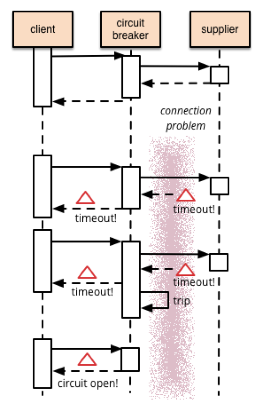
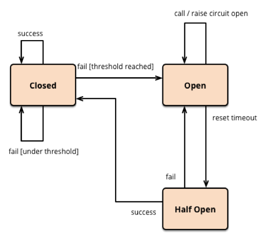
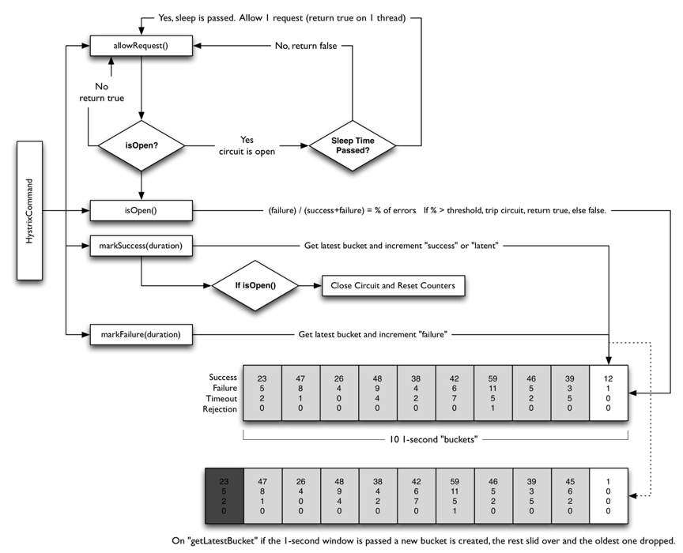

- 000 开篇词 洞悉技术的本质，享受科技的乐趣.md
- 001 程序员如何用技术变现（上）.md
- 002 程序员如何用技术变现（下）.md
- 003 Equifax信息泄露始末.md
- 004 从Equifax信息泄露看数据安全.md
- 005 何为技术领导力.md
- 006 如何拥有技术领导力.md
- 007 推荐阅读：每个程序员都该知道的事.md
- 008 Go语言，Docker和新技术.md
- 009 答疑解惑：渴望、热情和选择.md
- 010 如何成为一个大家愿意追随的Leader？.md
- 011 程序中的错误处理：错误返回码和异常捕捉.md
- 012 程序中的错误处理：异步编程和最佳实践.md
- 013 魔数 0x5f3759df.md
- 014 推荐阅读：机器学习101.md
- 015 时间管理：同扭曲时间的事儿抗争.md
- 016 时间管理：投资赚取时间.md
- 017 故障处理最佳实践：应对故障.md
- 018 故障处理最佳实践：故障改进.md
- 019 答疑解惑：我们应该能够识别的表象和本质.md
- 020 分布式系统架构的冰与火.md
- 021 从亚马逊的实践，谈分布式系统的难点.md
- 022 分布式系统的技术栈.md
- 023 分布式系统关键技术：全栈监控.md
- 024 分布式系统关键技术：服务调度.md
- 025 分布式系统关键技术：流量与数据调度.md
- 026 洞悉PaaS平台的本质.md
- 027 推荐阅读：分布式系统架构经典资料.md
- 028 编程范式游记（1）- 起源.md
- 029 编程范式游记（2）- 泛型编程.md
- 030 编程范式游记（3） - 类型系统和泛型的本质.md
- 031 Git协同工作流，你该怎样选.md
- 032 推荐阅读：分布式数据调度相关论文.md
- 033 编程范式游记（4）- 函数式编程.md
- 034 编程范式游记（5）- 修饰器模式.md
- 035 编程范式游记（6）- 面向对象编程.md
- 036 编程范式游记（7）- 基于原型的编程范式.md
- 037 编程范式游记（8）- Go 语言的委托模式.md
- 038 编程范式游记（9）- 编程的本质.md
- 039 编程范式游记（10）- 逻辑编程范式.md
- 040 编程范式游记（11）- 程序世界里的编程范式.md
- 041 弹力设计篇之“认识故障和弹力设计”.md
- 042 弹力设计篇之“隔离设计”.md
- 043 弹力设计篇之“异步通讯设计”.md
- 044 弹力设计篇之“幂等性设计”.md
- 045 弹力设计篇之“服务的状态”.md
- 046 弹力设计篇之“补偿事务”.md
- 047 弹力设计篇之“重试设计”.md
- 048 弹力设计篇之“熔断设计”.md
- 049 弹力设计篇之“限流设计”.md
- 050 弹力设计篇之“降级设计”.md
- 051 弹力设计篇之“弹力设计总结”.md
- 052 区块链技术 - 区块链的革命性及技术概要.md
- 053 区块链技术 - 区块链技术细节 - 哈希算法.md
- 054 区块链技术 - 区块链技术细节 - 加密和挖矿.md
- 055 区块链技术 - 去中心化的共识机制.md
- 056 区块链技术 - 智能合约.md
- 057 区块链技术 - 传统金融和虚拟货币.md
- 058 管理设计篇之分布式锁.md
- 059 管理设计篇之配置中心.md
- 060 管理设计篇之边车模式.md
- 061 管理设计篇之服务网格.md
- 062 管理设计篇之网关模式.md
- 063 管理设计篇之部署升级策略.md
- 064 性能设计篇之缓存.md
- 065 性能设计篇之异步处理.md
- 066 性能设计篇之数据库扩展.md
- 067 性能设计篇之秒杀.md
- 068 性能设计篇之边缘计算.md
- 069 程序员练级攻略（2018）：开篇词.md
- 070 程序员练级攻略（2018）：零基础启蒙.md
- 071 程序员练级攻略（2018）：正式入门.md
- 072 程序员练级攻略（2018）：程序员修养.md
- 073 程序员练级攻略（2018）：编程语言.md
- 074 程序员练级攻略：理论学科.md
- 075 程序员练级攻略（2018）：系统知识.md
- 076 程序员练级攻略（2018）：软件设计.md
- 077 程序员练级攻略（2018）：Linux系统、内存和网络.md
- 078 程序员练级攻略（2018）：异步IO模型和Lock-Free编程.md
- 079 程序员练级攻略（2018）：Java底层知识.md
- 080 程序员练级攻略（2018）：数据库.md
- 081 程序员练级攻略（2018）：分布式架构入门.md
- 082 程序员练级攻略（2018）：分布式架构经典图书和论文.md
- 083 程序员练级攻略（2018）：分布式架构工程设计.md
- 084 程序员练级攻略（2018）：微服务.md
- 085 程序员练级攻略（2018）：容器化和自动化运维.md
- 086 程序员练级攻略（2018）：机器学习和人工智能.md
- 087 程序员练级攻略（2018）：前端基础和底层原理.md
- 088 程序员练级攻略（2018）：前端性能优化和框架.md
- 089 程序员练级攻略（2018）：UIUX设计.md
- 090 程序员练级攻略（2018）：技术资源集散地.md
- 091 程序员面试攻略：面试前的准备.md
- 092 程序员面试攻略：面试中的技巧.md
- 093 程序员面试攻略：面试风格.md
- 094 程序员面试攻略：实力才是王中王.md
- 095 高效学习：端正学习态度.md
- 096 高效学习：源头、原理和知识地图.md
- 097 高效学习：深度，归纳和坚持实践.md
- 098 高效学习：如何学习和阅读代码.md
- 099 高效学习：面对枯燥和量大的知识.md
- 100 高效沟通：Talk和Code同等重要.md
- 101 高效沟通：沟通阻碍和应对方法.md
- 102 高效沟通：沟通方式及技巧.md
- 103 高效沟通：沟通技术.md
- 104 高效沟通：好老板要善于提问.md
- 105 高效沟通：好好说话的艺术.md
- 106 加餐 谈谈我的“三观”.md
- 107 结束语 业精于勤，行成于思.md
048 弹力设计篇之“熔断设计”
熔断机制借鉴于我们电闸上的 “ 保险丝 “，当电压有问题时（比如短路），自动跳闸，此时电路就会断开，我们的电器就会受到保护。不然，会导致电器被烧坏，如果人没在家或是人在熟睡中，还会导致火灾。所以，在电路世界通常都会有这样的自我保护装置。
同样，在我们的分布式系统设计中，也应该有这样的方式。前面说过重试机制，如果错误太多，或是在短时间内得不到修复，那么我们重试也没有意义了，此时应该开启我们的熔断操作，尤其是后端太忙的时候，使用熔断设计可以保护后端不会过载。
熔断设计
熔断器模式可以防止应用程序不断地尝试执行可能会失败的操作，使得应用程序继续执行而不用等待修正错误，或者浪费 CPU 时间去等待长时间的超时产生。熔断器模式也可以使应用程序能够诊断错误是否已经修正。如果已经修正，应用程序会再次尝试调用操作。
熔断器模式就像是那些容易导致错误的操作的一种代理。这种代理能够记录最近调用发生错误的次数，然后决定允许操作继续，或者立即返回错误。

（本图来自 Martin Fowler 的 Circuit Breaker）熔断器可以使用状态机来实现，内部模拟以下几种状态。
- 闭合（Closed）状态：我们需要一个调用失败的计数器，如果调用失败，则使失败次数加 1。如果最近失败次数超过了在给定时间内允许失败的阈值，则切换到断开 (Open) 状态。此时开启了一个超时时钟，当该时钟超过了该时间，则切换到半断开（Half-Open）状态。该超时时间的设定是给了系统一次机会来修正导致调用失败的错误，以回到正常工作的状态。在 Closed 状态下，错误计数器是基于时间的。在特定的时间间隔内会自动重置。这能够防止由于某次的偶然错误导致熔断器进入断开状态。也可以基于连续失败的次数。
- 断开 (Open) 状态：在该状态下，对应用程序的请求会立即返回错误响应，而不调用后端的服务。这样也许比较粗暴，有些时候，我们可以 cache 住上次成功请求，直接返回缓存（当然，这个缓存放在本地内存就好了），如果没有缓存再返回错误（缓存的机制最好用在全站一样的数据，而不是用在不同的用户间不同的数据，因为后者需要缓存的数据有可能会很多）。
- 半开（Half-Open）状态：允许应用程序一定数量的请求去调用服务。如果这些请求对服务的调用成功，那么可以认为之前导致调用失败的错误已经修正，此时熔断器切换到闭合状态 (并且将错误计数器重置)。
如果这一定数量的请求有调用失败的情况，则认为导致之前调用失败的问题仍然存在，熔断器切回到断开状态，然后重置计时器来给系统一定的时间来修正错误。半断开状态能够有效防止正在恢复中的服务被突然而来的大量请求再次拖垮。

（本图来自 Martin Fowler 的 Circuit Breaker）实现熔断器模式使得系统更加稳定和有弹性，在系统从错误中恢复的时候提供稳定性，并且减少了错误对系统性能的影响。它通过快速地拒绝那些试图有可能会导致错误的服务调用，而不会去等待操作超时或者永远不返回结果来提高系统的响应时间。
如果熔断器设计模式在每次状态切换的时候会发出一个事件，这种信息可以用来监控服务的运行状态，能够通知管理员在熔断器切换到断开状态时进行处理。
下图是 Netflix 的开源项目Hystrix中的熔断的实现逻辑（其出处在这里）。

从这个流程图中，可以看到：
- 有请求来了，首先 allowRequest() 函数判断是否在熔断中，如果不是则放行，如果是的话，还要看有没有到达一个熔断时间片，如果熔断时间片到了，也放行，否则直接返回出错。
- 每次调用都有两个函数 markSuccess(duration) 和 markFailure(duration) 来统计一下在一定的 duration 内有多少调用是成功还是失败的。
- 判断是否熔断的条件 isOpen()，是计算一下 failure/(success+failure) 当前的错误率，如果高于一个阈值，那么打开熔断，否则关闭。
- Hystrix 会在内存中维护一个数组，其中记录着每一个周期的请求结果的统计。超过时长长度的元素会被删除掉。
熔断设计的重点
在实现熔断器模式的时候，以下这些因素需可能需要考虑。
- 错误的类型。需要注意的是请求失败的原因会有很多种。需要根据不同的错误情况来调整相应的策略。所以，熔断和重试一样，需要对返回的错误进行识别。一些错误先走重试的策略（比如限流，或是超时），重试几次后再打开熔断。一些错误是远程服务挂掉，恢复时间比较长；这种错误不必走重试，可以直接打开熔断策略。
- 日志监控。熔断器应该能够记录所有失败的请求，以及一些可能会尝试成功的请求，使得管理员能够监控使用熔断器保护的服务的执行情况。
- 测试服务是否可用。在断开状态下，熔断器可以采用定期地 ping 一下远程的服务的健康检查接口，来判断服务是否恢复，而不是使用计时器来自动切换到半开状态。这样做的一个好处是，在服务恢复的情况下，不需要真实的用户流量就可以把状态从半开状态切回关闭状态。否则在半开状态下，即便服务已恢复了，也需要用户真实的请求来恢复，这会影响用户的真实请求。
- 手动重置。在系统中对于失败操作的恢复时间是很难确定的，提供一个手动重置功能能够使得管理员可以手动地强制将熔断器切换到闭合状态。同样的，如果受熔断器保护的服务暂时不可用的话，管理员能够强制将熔断器设置为断开状态。
- 并发问题。相同的熔断器有可能被大量并发请求同时访问。熔断器的实现不应该阻塞并发的请求或者增加每次请求调用的负担。尤其是其中的对调用结果的统计，一般来说会成为一个共享的数据结构，这个会导致有锁的情况。在这种情况下，最好使用一些无锁的数据结构，或是 atomic 的原子操作。这样会带来更好的性能。
- 资源分区。有时候，我们会把资源分布在不同的分区上。比如，数据库的分库分表，某个分区可能出现问题，而其它分区还可用。在这种情况下，单一的熔断器会把所有的分区访问给混为一谈，从而，一旦开始熔断，那么所有的分区都会受到熔断影响。或是出现一会儿熔断一会儿又好，来来回回的情况。所以，熔断器需要考虑这样的问题，只对有问题的分区进行熔断，而不是整体。
- 重试错误的请求。有时候，错误和请求的数据和参数有关系，所以，记录下出错的请求，在半开状态下重试能够准确地知道服务是否真的恢复。当然，这需要被调用端支持幂等调用，否则会出现一个操作被执行多次的副作用。
小结
好了，我们来总结一下今天分享的主要内容。首先，熔断设计是受了电路设计中保险丝的启发，其需要实现三个状态：闭合、断开和半开，分别对应于正常、故障和故障后检测故障是否已被修复的场景，并介绍了 Netflix 的 Hystrix 对熔断的实现。最后，我总结了熔断设计的几个重点。下篇文章中，我们讲述限流设计。希望对你有帮助。
也欢迎你分享一下你实现过的熔断使用了怎样的算法？实现的过程中遇到过什么坑？
© 2019 - 2023 Liangliang Lee. Powered by gin and hexo-theme-book.